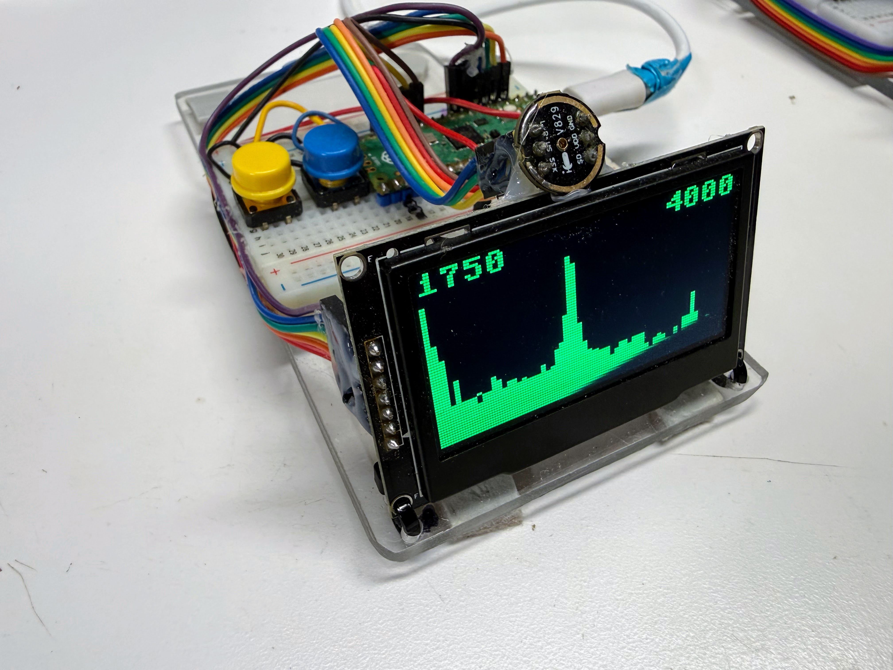

Hands-On Labs
Welcome, signal hunter!
 Hi, I'm Echo. I hunt things by listening — that's literally what echolocation is,
real-time signal processing with flippers. Over these 35 labs you're going to teach a
$5 chip to do the same trick. Time to transform!
Hi, I'm Echo. I hunt things by listening — that's literally what echolocation is,
real-time signal processing with flippers. Over these 35 labs you're going to teach a
$5 chip to do the same trick. Time to transform!
Thirty-five labs that take you from "what's a Thonny?" to "I hand-wrote an ARM assembly FFT and benchmarked it against eight competing versions."
You need no prior experience with FFTs, signal processing, or assembly language. Lab 1 assumes you own a computer. That's it.
Why this is worth your time
Here's the thing nobody tells you: a fast FFT is a superpower. Sound, vibration, radio — anything that wiggles — looks like meaningless noise until you transform it into the frequency domain. Then patterns leap out. A whistle becomes a number. An engine's rattle becomes a diagnosis.
Doing that transformation fast enough to keep up with the real world, on a chip that costs less than a sandwich, used to require expensive dedicated hardware. Most CS and EE undergraduates never get to touch this. You're about to.
What you'll need

| Item | Approx. cost | Used from |
|---|---|---|
| Raspberry Pi Pico 2 (RP2350) | $5 | Lab 1 |
| SSD1306 OLED display, 128×64, SPI | $5 | Lab 4 |
| Two push buttons | $1 | Lab 5 |
| INMP441 I²S MEMS microphone | $3 | Lab 7 |
| Breadboard + jumper wires | $5 | Lab 4 |
Every pin number lives in one file — config.py — which you'll set up in Lab 4 and import
everywhere after that.
The labs
Module 0 — Getting Started
Your computer talks to a microcontroller for the first time.
| # | Lab | You'll build |
|---|---|---|
| 1 | Hello World with Thonny | Your first program on real hardware |
| 2 | Blink: Your First Hardware Program | A blinking LED you control |
| 3 | Know Your Board | A report on your chip, read from its own registers |
Module 1 — Peripherals
Adding eyes, hands, and a filing cabinet.
| # | Lab | You'll build |
|---|---|---|
| 4 | The OLED Display | Text and pixels on a real screen |
| 5 | Buttons and Interaction | A menu you can click through |
| 6 | Deploying Code and Libraries | A program that runs on power-up, untethered |
Module 2 — Sound as Numbers
The microphone arrives. Everything gets more fun.
| # | Lab | You'll build |
|---|---|---|
| 7 | Your First Sound Capture | Raw audio samples, straight off the mic |
| 8 | Sound Levels: RMS and a VU Meter | A live loudness meter that reacts to your voice |
| 9 | Sampling Rate and Aliasing | A tone that lies about its pitch — and why |
| 10 | Bit Depth, Headroom and Clipping | Deliberately blown-out audio, and the fix |
Module 3 — Discovering Frequency
The heart of the course. You will invent the DFT rather than be handed it.
| # | Lab | You'll build |
|---|---|---|
| 11 | Sine Waves: Amplitude, Frequency, Phase | Waves from scratch, in code |
| 12 | Adding Waves: Superposition and Beats | Two notes that fight, and wobble |
| 13 | Correlation: Does My Signal Contain This Note? | A detector for one specific frequency |
| 14 | Sweeping All Frequencies: You Just Built a DFT | Your own DFT. Yes, really |
| 15 | Validating Your DFT on a Known Signal | Proof that it actually works |
| 16 | Your DFT Is Too Slow | The measurement that motivates everything next |
Module 4 — The FFT
Same answer. Vastly less work.
| # | Lab | You'll build |
|---|---|---|
| 17 | Divide and Conquer: From DFT to FFT | The trick that kills the wasted work |
| 18 | Bit Reversal and Twiddle Factors | The bookkeeping that makes it fit in place |
| 19 | The Butterfly | The four-line operation at the centre of it all |
| 20 | A Complete Python FFT | A working FFT, validated against your DFT |
Module 5 — Real Spectra
Point it at the world.
| # | Lab | You'll build |
|---|---|---|
| 21 | Spectrum of a Real Sound | A live spectrum — whistle and watch the peak move |
| 22 | Windowing and Spectral Leakage | Smeared peaks, then sharp ones |
| 23 | Peak Detection: Build a Tuner | A working instrument tuner |
| 24 | Real-Time Spectrum Analyzer | The full pipeline, profiled stage by stage |
Module 6 — Measuring Performance
You cannot optimize what you cannot measure honestly.
| # | Lab | You'll build |
|---|---|---|
| 25 | How Long Did That Take? | Nanosecond-accurate timing from a CPU register |
| 26 | Benchmarking Methodology | A harness that doesn't lie to you |
| 27 | The Abstraction Ladder | Python vs. native vs. viper vs. C vs. assembly |
Module 7 — Assembly Language
Where the speed actually lives.
| # | Lab | You'll build |
|---|---|---|
| 28 | Does Your CPU Have an FPU? | A capability probe — and a cautionary tale |
| 29 | Your First Assembly Function | Machine instructions you wrote yourself |
| 30 | Talking to the FPU | Float math at hardware speed |
| 31 | The Butterfly in Assembly | A complete assembly FFT |
Module 8 — Optimization and Capstone
| # | Lab | You'll build |
|---|---|---|
| 32 | Specialization and Branchless Code | Faster code by doing less |
| 33 | Beyond the Assembler: Hand-Encoding | An instruction your assembler refuses to write |
| 34 | Competing Variants: Predict, Measure, Explain | A comparison matrix, and some surprises |
| 35 | Capstone | Your own variant, benchmarked and written up |
How to get the most out of these
 Whenever a lab says Predict, then measure — actually write your guess down first.
In Plan 02 of this project, every single performance prediction turned out to be
too optimistic. Being wrong on paper is how you learn what the machine really does.
Whenever a lab says Predict, then measure — actually write your guess down first.
In Plan 02 of this project, every single performance prediction turned out to be
too optimistic. Being wrong on paper is how you learn what the machine really does.